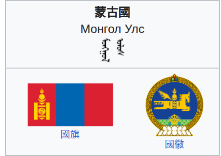
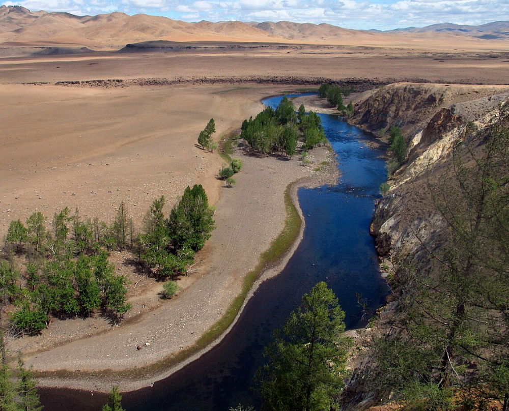

地理及氣候
地處亞洲中部的內陸高原，地貌涵蓋壯麗草原、戈壁沙漠與高山。
人口 : 約 350 萬人，喀爾喀蒙古族佔 80% 。
氣候：屬嚴酷的溫帶大陸性氣候，冬季極寒且漫長，夏季短促乾燥，且早晚溫差劇烈。
旅遊：5月至9月為最佳。可走訪首都烏蘭巴托的國家博物館，或前往哈斯台國家公園體驗遊牧文化、騎馬與入住傳統蒙古包。

旅遊簡報
簽證：香港特區護照持有人享 14 天免簽證；台灣旅客需預辦簽證；中國公民持普通護照需事先辦理簽證或 e-visa。
貨幣：官方貨幣為圖格里克 (MNT)。建議攜帶美金或人民幣到當地兌換，市區部分商戶可刷卡。
注意：尊重成吉思汗雕像，嚴禁戲謔言行。進入蒙古包不可踩踏門檻、不可靠柱子。氣候乾燥、日夜溫差極大，需備妥保暖衣物與防曬用品。

阿爾泰山脈岩畫群
位於蒙古國西部巴彥烏列蓋省
於2011年列入聯合國教科文組織世界遺產名錄。
岩畫橫跨約12,000年歷史，生動記錄了從更新世末期的大型狩獵社會，轉向全新世早期的森林狩獵，再到後期游牧生活方式的演變過程。岩畫內容包含狩獵、放牧及早期雪地活動，是研究北亞古代文明與環境變遷的珍貴視覺史料。


不兒罕合勒敦山
位於蒙古國肯特山脈
是成吉思汗的出生地與埋葬地 。
山體與周邊森林、河流及薩滿教聖地（敖包）共同構成景觀，象徵蒙古民族對「長生天」與祖先的崇拜 。
2015年因其展現的山岳崇拜文化與豐富生物多樣性，被列入世界遺產


金鷹節
於每年 10 月初舉行, 是西部巴彥烏列蓋省最具代表性的文化盛事
技能競賽：獵人騎馬展示與金雕的默契，比賽老鷹的捕獵速度與準確度。
文化慶典：包含哈薩克傳統賽馬、射箭及獨特的馬背叼羊（Bushkashi）比賽。
國際認可：這項獨特的鷹獵傳統已列入 UNESCO 人類非物質文化遺產。